Безмолвный образ
Silent Image
1 уровень, Иллюзия

Время сотворения 1 действие
Дистанция 60 футов
Компоненты В, С, М (кусок овечьей шерсти)
Длительность Концентрация, вплоть до 10 минут
Классы Бард, Волшебник, Чародей
Вы создаёте образ предмета, существа или другого видимого явления, помещающийся в объеме в куб с длиной ребра 15 футов. Образ появляется в точке, которую вы видите в пределах дистанции, и существует, пока активно заклинание. Это исключительно зрительная иллюзия, не сопровождаемая звуками, запахами и прочими сенсорными эффектами.
Вы можете действием заставить образ переместиться в любое место в пределах дистанции. Пока образ меняет местоположение, вы можете изменять его внешность, чтобы перемещение выглядело естественным. Например, если вы создаете образ существа и перемещаете его, вы можете изменить образ, чтобы казалось, что оно идет.
Физическое взаимодействие с образом даёт понять, что это иллюзия, потому что сквозь него всё проходит. Существа, исследующие образ действием, могут определить, что это иллюзия, совершив успешную проверку Интеллекта (Расследование) против Сл ваших заклинаний. Если существо распознает иллюзию, оно может видеть сквозь неё.